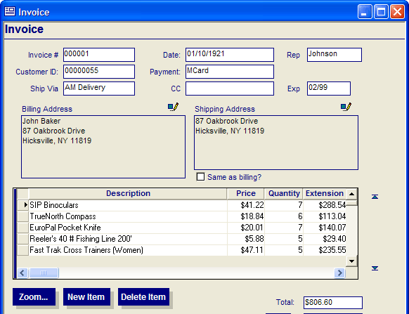

Understanding Levels in a Form
If a form is based on a set, and has one or more embedded forms or browses, then when you perform an action on a record in that form, you need to specify which record on the form you want to manipulate.
The actions that you can perform on a record include:
Navigation to the first, previous, next or last record in the current query list or index order
Entering a new record
Saving a record
Marking or un-marking a record
Deleting a record
For example, assume you are using a form with an embedded browse in it, as shown in the diagram below.

This form is based on a set, which has this structure:
If you give focus to the Invoice # field on the form, then click the "First record" icon on the toolbar, Alpha Anywhere will navigate to the first record in the invoice_header table. However, if you give focus to a record in the embedded browse, which shows the invoice line items, and then click the "First record" icon, Alpha Anywhere will navigate to the first record in the invoice_items table that matches the current parent record (i.e. invoice number 000001 in the above example).
Similarly, if you give focus to any field from the invoice_header table, then click the "New record" icon, Alpha Anywhere will begin entering a new record in the invoice_header table. However, if you give focus to a record in the embedded browse, and then click on the "New record" icon, Alpha Anywhere will begin entering a new record in the invoice_items table.
As you can see in the above examples, the meaning of the "First record" and "New record" buttons on the toolbar depends on which object on the form currently has focus.
Whenever you choose an action that operates on records in a form, you must specify the "level" in the form at which the action should take place. The top level (in this example, the invoice_header table) is referred to as the "parent" level.
<